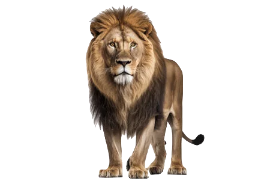
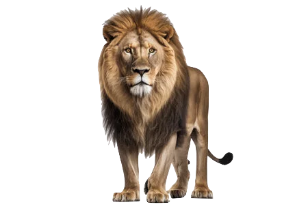

Hace 66 millones de años los dinosaurios fueron extintos gracias a un meteorito que cayo en Yucatán, ustedes pensaran que como un meteorito termino con todos los dinosaurios, ya que el meteorito cambio el clima y las plantas dejaron de vivir entonces murieron los herbívoros y luego los carnívoros murieron porque ya no podían comer, ya que su única comida eran los herbívoros, pero no se preocupen, ya que todavía hay un tipo de dinosaurios, que son las aves.
Los tiburones siguen vivos después de 400 millones de años atrás de hecho sobrevivieron al meteorito que termino con los dinosaurios aun qué termino con algunas especies de tiburones como el Squalicorax etc. Los tiburones blancos no les gusta comer humanos,pero la mayoría de veces cuando comen humanos es porque cuando están en la tabla y los surfea dores se acuestan en la tabla, los tiburones los confunden con leones marinos, pero realmente los tiburones huyen de los humanos.
Los lobos tienen un sentido del olfato muy agudo, lo cual hace que puedan localizar a sus presas a 2 millas de distancia, los mayores enemigos de los lobos son los pumas y los osos pueden matar a los lobos adultos, mientras que los coyotes y los zorros a menudo se aprovechan de las crías de lobo, los lobos son animales muy inteligentes que viven en manadas que en la mayoría de manadas generalmente hay entré 15 a 20 lobos.
Los leones llegan a vivir entre 15 a 16 años aproximadamente, la melena de los machos es una características de diferenciarlos con las hembras la melena también hace qué se vea más grande, el rugido del león es el 2º más potente del planeta, los leones son animales que suelen cazar en manada todos localizan bien cuál es su objetivo y atacan, el peso del corazón de las leonas es de 0,57% entonces es obio que el de los leones pesa más, pero no estas equivocado/a, el de los hombres pesa.45%, el nombre de los leones se llama así por la palabra griega leonis.